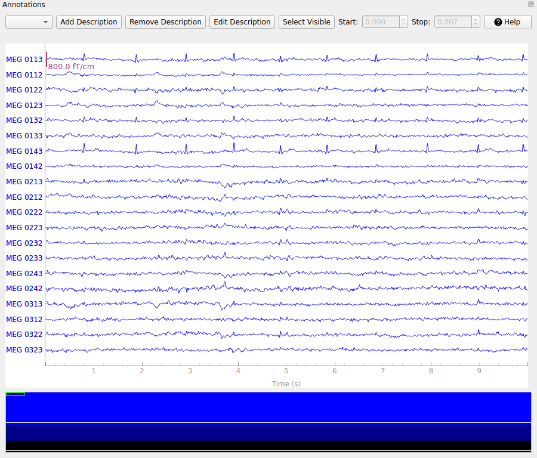
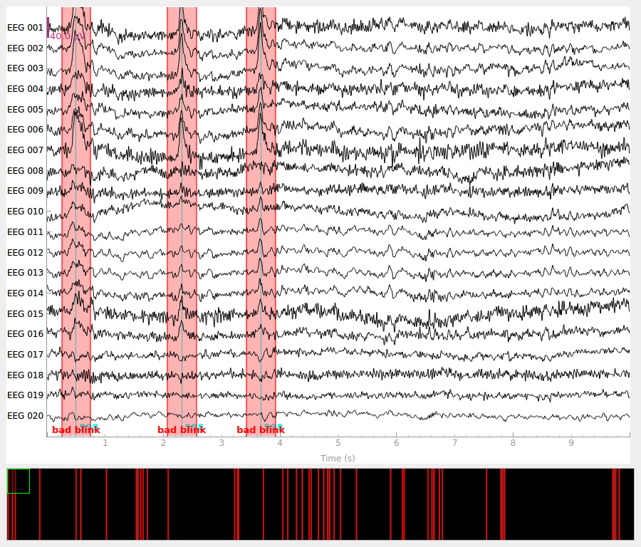

Note
Click here to download the full example code
Rejecting bad data spans and breaks¶
This tutorial covers:
manual marking of bad spans of data,
automated rejection of data spans based on signal amplitude, and
automated detection of breaks during an experiment.
We begin as always by importing the necessary Python modules and loading some example data; to save memory we’ll use a pre-filtered and downsampled version of the example data, and we’ll also load an events array to use when converting the continuous data to epochs:
import os
import mne
sample_data_folder = mne.datasets.sample.data_path()
sample_data_raw_file = os.path.join(sample_data_folder, 'MEG', 'sample',
'sample_audvis_filt-0-40_raw.fif')
raw = mne.io.read_raw_fif(sample_data_raw_file, verbose=False)
events_file = os.path.join(sample_data_folder, 'MEG', 'sample',
'sample_audvis_filt-0-40_raw-eve.fif')
events = mne.read_events(events_file)
Annotating bad spans of data¶
The tutorial Parsing events from raw data describes how
Annotations can be read from embedded events in the raw
recording file, and Annotating continuous data describes in detail how to
interactively annotate a Raw data object. Here, we focus on
best practices for annotating bad data spans so that they will be excluded
from your analysis pipeline.
The reject_by_annotation parameter¶
In the interactive raw.plot() window, the annotation controls can be
opened by pressing a. Here, new annotation labels can be created or
existing annotation labels can be selected for use.
fig = raw.plot()
fig.canvas.key_press_event('a')
- 
- 
You can see that default annotation label is “BAD_”; this can be edited
prior to pressing the “Add label” button to customize the label. The intent
is that users can annotate with as many or as few labels as makes sense for
their research needs, but that annotations marking spans that should be
excluded from the analysis pipeline should all begin with “BAD” or “bad”
(e.g., “bad_cough”, “bad-eyes-closed”, “bad door slamming”, etc). When this
practice is followed, many processing steps in MNE-Python will automatically
exclude the “bad”-labelled spans of data; this behavior is controlled by a
parameter reject_by_annotation that can be found in many MNE-Python
functions or class constructors, including:
creation of epoched data from continuous data (
mne.Epochs)many methods of the independent components analysis class (
mne.preprocessing.ICA)functions for finding heartbeat and blink artifacts (
find_ecg_events(),find_eog_events())covariance computations (
mne.compute_raw_covariance())power spectral density computation (
mne.io.Raw.plot_psd(),mne.time_frequency.psd_welch())
For example, when creating epochs from continuous data, if
reject_by_annotation=True the Epochs constructor will drop
any epoch that partially or fully overlaps with an annotated span that begins
with “bad”.
Generating annotations programmatically¶
The Overview of artifact detection tutorial introduced the artifact detection
functions find_eog_events() and
find_ecg_events() (although that tutorial mostly
relied on their higher-level wrappers
create_eog_epochs() and
create_ecg_epochs()). Here, for demonstration
purposes, we make use of the lower-level artifact detection function to get
an events array telling us where the blinks are, then automatically add
“bad_blink” annotations around them (this is not necessary when using
create_eog_epochs(), it is done here just to show
how annotations are added non-interactively). We’ll start the annotations
250 ms before the blink and end them 250 ms after it:
eog_events = mne.preprocessing.find_eog_events(raw)
onsets = eog_events[:, 0] / raw.info['sfreq'] - 0.25
durations = [0.5] * len(eog_events)
descriptions = ['bad blink'] * len(eog_events)
blink_annot = mne.Annotations(onsets, durations, descriptions,
orig_time=raw.info['meas_date'])
raw.set_annotations(blink_annot)
Out:
Using EOG channel: EOG 061
EOG channel index for this subject is: [375]
Filtering the data to remove DC offset to help distinguish blinks from saccades
Setting up band-pass filter from 1 - 10 Hz
FIR filter parameters
---------------------
Designing a two-pass forward and reverse, zero-phase, non-causal bandpass filter:
- Windowed frequency-domain design (firwin2) method
- Hann window
- Lower passband edge: 1.00
- Lower transition bandwidth: 0.50 Hz (-12 dB cutoff frequency: 0.75 Hz)
- Upper passband edge: 10.00 Hz
- Upper transition bandwidth: 0.50 Hz (-12 dB cutoff frequency: 10.25 Hz)
- Filter length: 1502 samples (10.003 sec)
Now detecting blinks and generating corresponding events
Found 46 significant peaks
Number of EOG events detected: 46
Now we can confirm that the annotations are centered on the EOG events. Since blinks are usually easiest to see in the EEG channels, we’ll only plot EEG here:
eeg_picks = mne.pick_types(raw.info, meg=False, eeg=True)
raw.plot(events=eog_events, order=eeg_picks)
See the section Creating annotations programmatically for more details on creating annotations programmatically.
Detecting and annotating breaks¶
Another useful function, albeit not related to artifact detection per se,
is mne.preprocessing.annotate_break: It will generate annotations for
segments of the data where no existing annotations (or, alternatively:
events) can be found. It can therefore be used to automatically detect and
mark breaks, e.g. between experimental blocks, when recording continued.
For the sake of this example, let’s assume an experiment consisting of two
blocks, the first one stretching from 30 to 90, and the second from 120 to
180 seconds. We’ll mark these blocks by annotations, and then use
mne.preprocessing.annotate_break to detect and annotate any breaks.
Note
We need to take raw.first_time into account, otherwise the
onsets will be incorrect!
onsets = [
raw.first_time + 30,
raw.first_time + 180
]
durations = [60, 60]
descriptions = ['block_1', 'block_2']
block_annots = mne.Annotations(onset=onsets,
duration=durations,
description=descriptions,
orig_time=raw.info['meas_date'])
raw.set_annotations(raw.annotations + block_annots) # add to existing
raw.plot()

Now detect break periods. We can control how far the break annotations shall expand toward both ends of each break.
break_annots = mne.preprocessing.annotate_break(
raw=raw,
min_break_duration=20, # consider segments of at least 20 s duration
t_start_after_previous=5, # start annotation 5 s after end of previous one
t_stop_before_next=2 # stop annotation 2 s before beginning of next one
)
raw.set_annotations(raw.annotations + break_annots) # add to existing
raw.plot()
Out:
Ignoring annotations with descriptions starting with: bad, edge
Detected 3 break periods of >= 20 sec duration:
0.0 – 28.0 sec [28.0 sec]
95.0 – 178.0 sec [83.0 sec]
245.0 – 277.7 sec [32.7 sec]
In total, 51.7% of the data (143.7 sec) have been marked as a break.
You can see that 3 segments have been annotated as BAD_break:
the first one starting with the beginning of the recording and ending 2 seconds before the beginning of block 1 (due to
t_stop_before_next=2),the second one starting 5 seconds after block 1 has ended, and ending 2 seconds before the beginning of block 2 (
t_start_after_previous=5,t_stop_before_next=2),and the last one starting 5 seconds after block 2 has ended (
t_start_after_previous=5) and continuing until the end of the recording.
You can also see that only the block_1 and block_2 annotations
were considered in the detection of the break periods – the EOG annotations
were simply ignored. This is because, by default,
annotate_break ignores all annotations starting with
'bad'. You can control this behavior via the ignore parameter.
It is also possible to perform break period detection based on an array
of events: simply pass the array via the events parameter. Existing
annotations in the raw data will be ignored in this case:
# only keep some button press events (code 32) for this demonstration
events_subset = events[events[:, -1] == 32]
# drop the first and last few events
events_subset = events_subset[3:-3]
break_annots = mne.preprocessing.annotate_break(
raw=raw,
events=events_subset, # passing events will ignore existing annotations
min_break_duration=25 # pick a longer break duration this time
)
# replace existing annotations (otherwise it becomes difficult to see any
# effects in the plot!)
raw.set_annotations(break_annots)
raw.plot(events=events_subset)
Out:
Detected 2 break periods of >= 25 sec duration:
0.0 – 51.4 sec [51.4 sec]
185.6 – 277.7 sec [92.1 sec]
In total, 51.7% of the data (143.5 sec) have been marked as a break.
Rejecting Epochs based on channel amplitude¶
Besides “bad” annotations, the mne.Epochs class constructor has
another means of rejecting epochs, based on signal amplitude thresholds for
each channel type. In the overview tutorial we saw an example of this: setting maximum
acceptable peak-to-peak amplitudes for each channel type in an epoch, using
the reject parameter. There is also a related parameter, flat, that
can be used to set minimum acceptable peak-to-peak amplitudes for each
channel type in an epoch:
reject_criteria = dict(mag=3000e-15, # 3000 fT
grad=3000e-13, # 3000 fT/cm
eeg=100e-6, # 100 µV
eog=200e-6) # 200 µV
flat_criteria = dict(mag=1e-15, # 1 fT
grad=1e-13, # 1 fT/cm
eeg=1e-6) # 1 µV
The values that are appropriate are dataset- and hardware-dependent, so some trial-and-error may be necessary to find the correct balance between data quality and loss of power due to too many dropped epochs. Here, we’ve set the rejection criteria to be fairly stringent, for illustration purposes.
Two additional parameters, reject_tmin and reject_tmax, are used to
set the temporal window in which to calculate peak-to-peak amplitude for the
purposes of epoch rejection. These default to the same tmin and tmax
of the entire epoch. As one example, if you wanted to only apply the
rejection thresholds to the portion of the epoch that occurs before the
event marker around which the epoch is created, you could set
reject_tmax=0. A summary of the causes of rejected epochs can be
generated with the plot_drop_log() method:
raw.set_annotations(blink_annot) # restore the EOG annotations
epochs = mne.Epochs(raw, events, tmin=-0.2, tmax=0.5, reject_tmax=0,
reject=reject_criteria, flat=flat_criteria,
reject_by_annotation=False, preload=True)
epochs.plot_drop_log()
Out:
Not setting metadata
Not setting metadata
319 matching events found
Setting baseline interval to [-0.19979521315838786, 0.0] sec
Applying baseline correction (mode: mean)
Created an SSP operator (subspace dimension = 4)
4 projection items activated
Loading data for 319 events and 106 original time points ...
Rejecting epoch based on EEG : ['EEG 001', 'EEG 002', 'EEG 003', 'EEG 007']
Rejecting epoch based on EOG : ['EOG 061']
Rejecting epoch based on EEG : ['EEG 001', 'EEG 003', 'EEG 007']
Rejecting epoch based on MAG : ['MEG 1711']
Rejecting epoch based on EEG : ['EEG 007']
Rejecting epoch based on EEG : ['EEG 003']
Rejecting epoch based on EOG : ['EOG 061']
Rejecting epoch based on EEG : ['EEG 001', 'EEG 002', 'EEG 003']
8 bad epochs dropped
Notice that we’ve passed reject_by_annotation=False above, in order to
isolate the effects of the rejection thresholds. If we re-run the epoching
with reject_by_annotation=True (the default) we see that the rejections
due to EEG and EOG channels have disappeared (suggesting that those channel
fluctuations were probably blink-related, and were subsumed by rejections
based on the “bad blink” label).
epochs = mne.Epochs(raw, events, tmin=-0.2, tmax=0.5, reject_tmax=0,
reject=reject_criteria, flat=flat_criteria, preload=True)
epochs.plot_drop_log()
Out:
Not setting metadata
Not setting metadata
319 matching events found
Setting baseline interval to [-0.19979521315838786, 0.0] sec
Applying baseline correction (mode: mean)
Created an SSP operator (subspace dimension = 4)
4 projection items activated
Loading data for 319 events and 106 original time points ...
Rejecting epoch based on MAG : ['MEG 1711']
39 bad epochs dropped
More importantly, note that many more epochs are rejected (~20% instead of ~2.5%) when rejecting based on the blink labels, underscoring why it is usually desirable to repair artifacts rather than exclude them.
The plot_drop_log() method is a visualization of an
Epochs attribute, namely epochs.drop_log, which stores
empty lists for retained epochs and lists of strings for dropped epochs, with
the strings indicating the reason(s) why the epoch was dropped. For example:
print(epochs.drop_log)
Out:
(('bad blink',), (), (), (), (), (), (), (), (), (), (), (), (), (), (), (), ('bad blink',), ('bad blink',), (), (), (), (), (), (), (), (), (), (), (), (), (), (), (), (), (), (), (), (), (), (), (), ('bad blink',), (), (), ('bad blink',), (), (), (), (), (), (), (), (), (), (), (), (), (), (), (), (), (), ('bad blink',), (), (), (), (), (), (), (), (), (), (), (), (), (), (), (), (), (), (), (), ('bad blink',), ('bad blink',), (), ('bad blink',), ('bad blink',), (), (), ('bad blink',), (), (), (), (), (), (), (), (), (), (), (), (), (), ('bad blink',), (), (), (), (), (), (), (), (), (), (), (), (), (), (), (), (), (), (), (), (), ('MEG 1711',), (), (), (), (), (), (), (), (), (), (), (), (), (), (), (), (), (), (), (), (), (), (), ('bad blink',), (), ('bad blink',), ('bad blink',), (), (), (), (), (), (), (), (), (), (), (), (), (), (), (), (), ('bad blink',), (), (), (), (), (), (), (), (), (), (), ('bad blink',), (), (), (), (), (), (), (), (), (), ('bad blink',), (), (), ('bad blink',), ('bad blink',), (), (), (), ('bad blink',), ('bad blink',), (), (), (), (), ('bad blink',), (), (), (), ('bad blink',), (), (), ('bad blink',), ('bad blink',), (), (), ('bad blink',), (), (), (), ('bad blink',), (), (), (), (), (), (), (), (), (), (), ('bad blink',), (), (), (), (), (), (), (), (), (), (), (), (), (), (), (), (), (), (), (), (), (), (), ('bad blink',), (), (), (), (), (), (), (), ('bad blink',), ('bad blink',), (), (), (), (), (), (), (), (), (), (), (), (), (), (), (), ('bad blink',), (), (), ('bad blink',), ('bad blink',), (), (), ('bad blink',), (), ('bad blink',), (), (), (), (), (), (), (), (), (), (), (), (), (), (), (), (), (), (), (), (), (), (), (), (), (), (), (), (), ('bad blink',), (), (), (), ())
Finally, it should be noted that “dropped” epochs are not necessarily deleted
from the Epochs object right away. Above, we forced the
dropping to happen when we created the Epochs object by using
the preload=True parameter. If we had not done that, the
Epochs object would have been memory-mapped (not loaded into
RAM), in which case the criteria for dropping epochs are stored, and the
actual dropping happens when the Epochs data are finally loaded
and used. There are several ways this can get triggered, such as:
explicitly loading the data into RAM with the
load_data()methodplotting the data (
plot(),plot_image(), etc)
You can also trigger dropping with the drop_bad() method;
if reject and/or flat criteria have already been provided to the
epochs constructor, drop_bad() can be used without
arguments to simply delete the epochs already marked for removal (if the
epochs have already been dropped, nothing further will happen):
Alternatively, if rejection thresholds were not originally given to the
Epochs constructor, they can be passed to
drop_bad() later instead; this can also be a way of
imposing progressively more stringent rejection criteria:
stronger_reject_criteria = dict(mag=2000e-15, # 2000 fT
grad=2000e-13, # 2000 fT/cm
eeg=100e-6, # 100 µV
eog=100e-6) # 100 µV
epochs.drop_bad(reject=stronger_reject_criteria)
print(epochs.drop_log)
Out:
Rejecting epoch based on MAG : ['MEG 0111', 'MEG 0141', 'MEG 1411', 'MEG 1421', 'MEG 1431', 'MEG 1541']
Rejecting epoch based on MAG : ['MEG 0111', 'MEG 0141', 'MEG 1421', 'MEG 1431', 'MEG 1541', 'MEG 2621']
Rejecting epoch based on MAG : ['MEG 0111', 'MEG 0141', 'MEG 1411', 'MEG 1421', 'MEG 1431', 'MEG 1441', 'MEG 1541', 'MEG 2621']
Rejecting epoch based on MAG : ['MEG 0111', 'MEG 0141', 'MEG 1421', 'MEG 1431', 'MEG 1541', 'MEG 2621']
Rejecting epoch based on MAG : ['MEG 0141', 'MEG 1421', 'MEG 1431', 'MEG 1541', 'MEG 2621']
Rejecting epoch based on MAG : ['MEG 0111', 'MEG 0141', 'MEG 1421', 'MEG 1431']
Rejecting epoch based on MAG : ['MEG 0111', 'MEG 0141', 'MEG 1411', 'MEG 1421', 'MEG 1431', 'MEG 1541', 'MEG 2621']
Rejecting epoch based on MAG : ['MEG 0111', 'MEG 0141', 'MEG 1421', 'MEG 1431', 'MEG 1541', 'MEG 2621']
Rejecting epoch based on MAG : ['MEG 0111', 'MEG 0141', 'MEG 1411', 'MEG 1421', 'MEG 1431', 'MEG 1541', 'MEG 2621']
Rejecting epoch based on MAG : ['MEG 1421', 'MEG 1431', 'MEG 2621']
Rejecting epoch based on MAG : ['MEG 0111', 'MEG 0141', 'MEG 1421', 'MEG 1431', 'MEG 1541']
Rejecting epoch based on MAG : ['MEG 0111', 'MEG 0141', 'MEG 1411', 'MEG 1421', 'MEG 1431', 'MEG 1541', 'MEG 2621']
Rejecting epoch based on EOG : ['EOG 061']
Rejecting epoch based on MAG : ['MEG 0111', 'MEG 0141', 'MEG 1421', 'MEG 1431', 'MEG 1541', 'MEG 2621']
Rejecting epoch based on MAG : ['MEG 0111', 'MEG 0141', 'MEG 1411', 'MEG 1421', 'MEG 1431', 'MEG 1541']
Rejecting epoch based on MAG : ['MEG 0111', 'MEG 0141', 'MEG 1421', 'MEG 1431']
Rejecting epoch based on MAG : ['MEG 0111', 'MEG 0141', 'MEG 1421', 'MEG 1541']
Rejecting epoch based on EOG : ['EOG 061']
Rejecting epoch based on MAG : ['MEG 0111', 'MEG 0141', 'MEG 1411', 'MEG 1421', 'MEG 1431', 'MEG 1441', 'MEG 1541', 'MEG 2621']
Rejecting epoch based on EOG : ['EOG 061']
Rejecting epoch based on MAG : ['MEG 0111', 'MEG 0141', 'MEG 1221', 'MEG 1321', 'MEG 1411', 'MEG 1421', 'MEG 1431', 'MEG 1441', 'MEG 1541', 'MEG 1741', 'MEG 2141', 'MEG 2621']
Rejecting epoch based on MAG : ['MEG 0111', 'MEG 0141', 'MEG 1421', 'MEG 1431', 'MEG 1541', 'MEG 1741', 'MEG 2141', 'MEG 2621']
Rejecting epoch based on MAG : ['MEG 0111', 'MEG 0141', 'MEG 1421', 'MEG 1431', 'MEG 1541']
Rejecting epoch based on MAG : ['MEG 0111', 'MEG 0141', 'MEG 1411', 'MEG 1421', 'MEG 1431', 'MEG 1541', 'MEG 2621']
Rejecting epoch based on EOG : ['EOG 061']
Rejecting epoch based on MAG : ['MEG 0111', 'MEG 0141', 'MEG 1421', 'MEG 1431', 'MEG 1541']
Rejecting epoch based on MAG : ['MEG 0111', 'MEG 0141', 'MEG 1411', 'MEG 1421', 'MEG 1431', 'MEG 1541', 'MEG 2621']
Rejecting epoch based on MAG : ['MEG 0111', 'MEG 0141', 'MEG 1421', 'MEG 1431', 'MEG 1541']
Rejecting epoch based on MAG : ['MEG 0111', 'MEG 0141', 'MEG 1541']
Rejecting epoch based on MAG : ['MEG 0111', 'MEG 0141', 'MEG 1421', 'MEG 1431']
Rejecting epoch based on MAG : ['MEG 0111', 'MEG 0141', 'MEG 1411', 'MEG 1421', 'MEG 1431', 'MEG 1541']
Rejecting epoch based on MAG : ['MEG 0111', 'MEG 0141', 'MEG 1421']
Rejecting epoch based on MAG : ['MEG 1421', 'MEG 1431']
Rejecting epoch based on MAG : ['MEG 1431']
Rejecting epoch based on MAG : ['MEG 0111', 'MEG 0141', 'MEG 1421', 'MEG 1431']
Rejecting epoch based on MAG : ['MEG 0111', 'MEG 0141', 'MEG 1421', 'MEG 1431', 'MEG 1541']
Rejecting epoch based on EOG : ['EOG 061']
Rejecting epoch based on MAG : ['MEG 0111', 'MEG 0141', 'MEG 1421', 'MEG 1431', 'MEG 2621']
Rejecting epoch based on EOG : ['EOG 061']
Rejecting epoch based on MAG : ['MEG 0111', 'MEG 0141', 'MEG 1411', 'MEG 1421', 'MEG 1431', 'MEG 1541']
Rejecting epoch based on MAG : ['MEG 0111', 'MEG 0141', 'MEG 1421', 'MEG 1431', 'MEG 1541']
Rejecting epoch based on MAG : ['MEG 0111', 'MEG 0141', 'MEG 1411', 'MEG 1421', 'MEG 1431', 'MEG 2621']
Rejecting epoch based on MAG : ['MEG 0111', 'MEG 0141', 'MEG 0811', 'MEG 0911', 'MEG 1411', 'MEG 1421', 'MEG 1431', 'MEG 1541', 'MEG 2621']
Rejecting epoch based on MAG : ['MEG 0111', 'MEG 0141', 'MEG 1411', 'MEG 1421', 'MEG 1431']
Rejecting epoch based on EOG : ['EOG 061']
Rejecting epoch based on MAG : ['MEG 0111', 'MEG 0141', 'MEG 1411', 'MEG 1421', 'MEG 1431', 'MEG 1541', 'MEG 2621']
Rejecting epoch based on MAG : ['MEG 0111', 'MEG 0141', 'MEG 1421', 'MEG 1541']
Rejecting epoch based on MAG : ['MEG 0111', 'MEG 0141', 'MEG 1321', 'MEG 1331', 'MEG 1421', 'MEG 1431', 'MEG 1541']
Rejecting epoch based on MAG : ['MEG 0111', 'MEG 0141', 'MEG 0521', 'MEG 0811', 'MEG 1411', 'MEG 1421', 'MEG 1431', 'MEG 1541', 'MEG 2621']
Rejecting epoch based on MAG : ['MEG 1421']
Rejecting epoch based on MAG : ['MEG 0111', 'MEG 0141', 'MEG 1421', 'MEG 1431', 'MEG 1541']
Rejecting epoch based on MAG : ['MEG 0141', 'MEG 1421', 'MEG 1431', 'MEG 2621']
Rejecting epoch based on MAG : ['MEG 0111', 'MEG 0141', 'MEG 1421', 'MEG 1431', 'MEG 2621']
Rejecting epoch based on MAG : ['MEG 0111', 'MEG 0141', 'MEG 1421', 'MEG 1431', 'MEG 1541', 'MEG 2131', 'MEG 2531', 'MEG 2541', 'MEG 2611', 'MEG 2621', 'MEG 2631']
Rejecting epoch based on MAG : ['MEG 1411', 'MEG 1421', 'MEG 1431', 'MEG 2621']
Rejecting epoch based on MAG : ['MEG 2421']
Rejecting epoch based on MAG : ['MEG 1321', 'MEG 1331']
Rejecting epoch based on MAG : ['MEG 0111', 'MEG 0141', 'MEG 1411', 'MEG 1421', 'MEG 1431', 'MEG 1541']
Rejecting epoch based on MAG : ['MEG 0111', 'MEG 0141', 'MEG 1421', 'MEG 1431', 'MEG 1541', 'MEG 2621']
Rejecting epoch based on MAG : ['MEG 0111', 'MEG 0141', 'MEG 1421', 'MEG 1431', 'MEG 1541']
Rejecting epoch based on MAG : ['MEG 0111', 'MEG 0141', 'MEG 1411', 'MEG 1421', 'MEG 1541']
Rejecting epoch based on MAG : ['MEG 0111', 'MEG 0141', 'MEG 1411', 'MEG 1421', 'MEG 1431', 'MEG 1541', 'MEG 2621']
Rejecting epoch based on MAG : ['MEG 0141', 'MEG 1421', 'MEG 1431', 'MEG 2621']
Rejecting epoch based on MAG : ['MEG 0111', 'MEG 0141', 'MEG 1421', 'MEG 1431', 'MEG 1541', 'MEG 2621']
Rejecting epoch based on MAG : ['MEG 0141', 'MEG 1411', 'MEG 1421', 'MEG 1431', 'MEG 2621']
65 bad epochs dropped
(('bad blink',), (), ('MEG 0111', 'MEG 0141', 'MEG 1411', 'MEG 1421', 'MEG 1431', 'MEG 1541'), (), (), ('MEG 0111', 'MEG 0141', 'MEG 1421', 'MEG 1431', 'MEG 1541', 'MEG 2621'), (), (), ('MEG 0111', 'MEG 0141', 'MEG 1411', 'MEG 1421', 'MEG 1431', 'MEG 1441', 'MEG 1541', 'MEG 2621'), (), (), (), ('MEG 0111', 'MEG 0141', 'MEG 1421', 'MEG 1431', 'MEG 1541', 'MEG 2621'), (), (), (), ('bad blink',), ('bad blink',), (), (), (), (), ('MEG 0141', 'MEG 1421', 'MEG 1431', 'MEG 1541', 'MEG 2621'), (), (), (), ('MEG 0111', 'MEG 0141', 'MEG 1421', 'MEG 1431'), (), (), ('MEG 0111', 'MEG 0141', 'MEG 1411', 'MEG 1421', 'MEG 1431', 'MEG 1541', 'MEG 2621'), (), (), (), (), (), (), ('MEG 0111', 'MEG 0141', 'MEG 1421', 'MEG 1431', 'MEG 1541', 'MEG 2621'), (), (), (), (), ('bad blink',), (), ('MEG 0111', 'MEG 0141', 'MEG 1411', 'MEG 1421', 'MEG 1431', 'MEG 1541', 'MEG 2621'), ('bad blink',), (), ('MEG 1421', 'MEG 1431', 'MEG 2621'), (), (), ('MEG 0111', 'MEG 0141', 'MEG 1421', 'MEG 1431', 'MEG 1541'), (), (), (), (), (), ('MEG 0111', 'MEG 0141', 'MEG 1411', 'MEG 1421', 'MEG 1431', 'MEG 1541', 'MEG 2621'), (), (), (), (), (), (), ('bad blink',), (), (), ('EOG 061',), (), (), (), (), (), ('MEG 0111', 'MEG 0141', 'MEG 1421', 'MEG 1431', 'MEG 1541', 'MEG 2621'), (), (), (), (), (), (), (), (), ('MEG 0111', 'MEG 0141', 'MEG 1411', 'MEG 1421', 'MEG 1431', 'MEG 1541'), (), ('bad blink',), ('bad blink',), (), ('bad blink',), ('bad blink',), (), (), ('bad blink',), (), (), (), (), (), ('MEG 0111', 'MEG 0141', 'MEG 1421', 'MEG 1431'), (), (), (), (), (), ('MEG 0111', 'MEG 0141', 'MEG 1421', 'MEG 1541'), ('EOG 061',), ('bad blink',), ('MEG 0111', 'MEG 0141', 'MEG 1411', 'MEG 1421', 'MEG 1431', 'MEG 1441', 'MEG 1541', 'MEG 2621', 'EOG 061'), (), (), (), ('EOG 061',), ('MEG 0111', 'MEG 0141', 'MEG 1221', 'MEG 1321', 'MEG 1411', 'MEG 1421', 'MEG 1431', 'MEG 1441', 'MEG 1541', 'MEG 1741', 'MEG 2141', 'MEG 2621'), (), (), ('MEG 0111', 'MEG 0141', 'MEG 1421', 'MEG 1431', 'MEG 1541', 'MEG 1741', 'MEG 2141', 'MEG 2621'), (), (), ('MEG 0111', 'MEG 0141', 'MEG 1421', 'MEG 1431', 'MEG 1541'), (), (), ('MEG 0111', 'MEG 0141', 'MEG 1411', 'MEG 1421', 'MEG 1431', 'MEG 1541', 'MEG 2621'), (), (), (), ('EOG 061',), (), ('MEG 1711',), (), (), (), ('MEG 0111', 'MEG 0141', 'MEG 1421', 'MEG 1431', 'MEG 1541'), (), (), ('MEG 0111', 'MEG 0141', 'MEG 1411', 'MEG 1421', 'MEG 1431', 'MEG 1541', 'MEG 2621'), (), (), ('MEG 0111', 'MEG 0141', 'MEG 1421', 'MEG 1431', 'MEG 1541'), (), (), (), ('MEG 0111', 'MEG 0141', 'MEG 1541'), (), (), (), (), (), ('MEG 0111', 'MEG 0141', 'MEG 1421', 'MEG 1431'), (), ('MEG 0111', 'MEG 0141', 'MEG 1411', 'MEG 1421', 'MEG 1431', 'MEG 1541'), ('bad blink',), (), ('bad blink',), ('bad blink',), (), ('MEG 0111', 'MEG 0141', 'MEG 1421'), (), (), (), (), ('MEG 1421', 'MEG 1431'), (), ('MEG 1431',), (), (), (), (), (), ('MEG 0111', 'MEG 0141', 'MEG 1421', 'MEG 1431'), (), ('bad blink',), ('MEG 0111', 'MEG 0141', 'MEG 1421', 'MEG 1431', 'MEG 1541'), (), (), (), (), (), (), (), ('EOG 061',), (), ('bad blink',), (), ('MEG 0111', 'MEG 0141', 'MEG 1421', 'MEG 1431', 'MEG 2621'), ('EOG 061',), (), ('MEG 0111', 'MEG 0141', 'MEG 1411', 'MEG 1421', 'MEG 1431', 'MEG 1541'), (), ('MEG 0111', 'MEG 0141', 'MEG 1421', 'MEG 1431', 'MEG 1541'), (), (), ('bad blink',), (), ('MEG 0111', 'MEG 0141', 'MEG 1411', 'MEG 1421', 'MEG 1431', 'MEG 2621'), ('bad blink',), ('bad blink',), ('MEG 0111', 'MEG 0141', 'MEG 0811', 'MEG 0911', 'MEG 1411', 'MEG 1421', 'MEG 1431', 'MEG 1541', 'MEG 2621'), (), (), ('bad blink',), ('bad blink',), (), (), (), ('MEG 0111', 'MEG 0141', 'MEG 1411', 'MEG 1421', 'MEG 1431'), ('bad blink',), ('EOG 061',), ('MEG 0111', 'MEG 0141', 'MEG 1411', 'MEG 1421', 'MEG 1431', 'MEG 1541', 'MEG 2621'), (), ('bad blink',), (), (), ('bad blink',), ('bad blink',), (), (), ('bad blink',), (), (), (), ('bad blink',), (), ('MEG 0111', 'MEG 0141', 'MEG 1421', 'MEG 1541'), (), (), (), (), ('MEG 0111', 'MEG 0141', 'MEG 1321', 'MEG 1331', 'MEG 1421', 'MEG 1431', 'MEG 1541'), (), (), ('MEG 0111', 'MEG 0141', 'MEG 0521', 'MEG 0811', 'MEG 1411', 'MEG 1421', 'MEG 1431', 'MEG 1541', 'MEG 2621'), ('bad blink',), ('MEG 1421',), (), (), (), (), (), ('MEG 0111', 'MEG 0141', 'MEG 1421', 'MEG 1431', 'MEG 1541'), (), (), (), ('MEG 0141', 'MEG 1421', 'MEG 1431', 'MEG 2621'), ('MEG 0111', 'MEG 0141', 'MEG 1421', 'MEG 1431', 'MEG 2621'), (), (), (), (), (), ('MEG 0111', 'MEG 0141', 'MEG 1421', 'MEG 1431', 'MEG 1541', 'MEG 2131', 'MEG 2531', 'MEG 2541', 'MEG 2611', 'MEG 2621', 'MEG 2631'), (), (), (), (), ('bad blink',), (), (), (), (), ('MEG 1411', 'MEG 1421', 'MEG 1431', 'MEG 2621'), ('MEG 2421',), (), ('bad blink',), ('bad blink',), ('MEG 1321', 'MEG 1331'), (), (), (), (), (), (), ('MEG 0111', 'MEG 0141', 'MEG 1411', 'MEG 1421', 'MEG 1431', 'MEG 1541'), (), (), ('MEG 0111', 'MEG 0141', 'MEG 1421', 'MEG 1431', 'MEG 1541', 'MEG 2621'), (), (), (), ('MEG 0111', 'MEG 0141', 'MEG 1421', 'MEG 1431', 'MEG 1541'), ('bad blink',), (), ('MEG 0111', 'MEG 0141', 'MEG 1411', 'MEG 1421', 'MEG 1541'), ('bad blink',), ('bad blink',), (), (), ('bad blink',), (), ('bad blink',), (), (), (), (), (), (), (), (), (), (), (), (), ('MEG 0111', 'MEG 0141', 'MEG 1411', 'MEG 1421', 'MEG 1431', 'MEG 1541', 'MEG 2621'), (), (), (), (), (), (), (), ('MEG 0141', 'MEG 1421', 'MEG 1431', 'MEG 2621'), (), (), ('MEG 0111', 'MEG 0141', 'MEG 1421', 'MEG 1431', 'MEG 1541', 'MEG 2621'), (), (), (), (), ('bad blink',), (), (), ('MEG 0141', 'MEG 1411', 'MEG 1421', 'MEG 1431', 'MEG 2621'), ())
Note that a complementary Python module, the autoreject package, uses machine learning to find optimal rejection criteria, and is designed to integrate smoothly with MNE-Python workflows. This can be a considerable time-saver when working with heterogeneous datasets.
Total running time of the script: ( 0 minutes 17.291 seconds)
Estimated memory usage: 89 MB